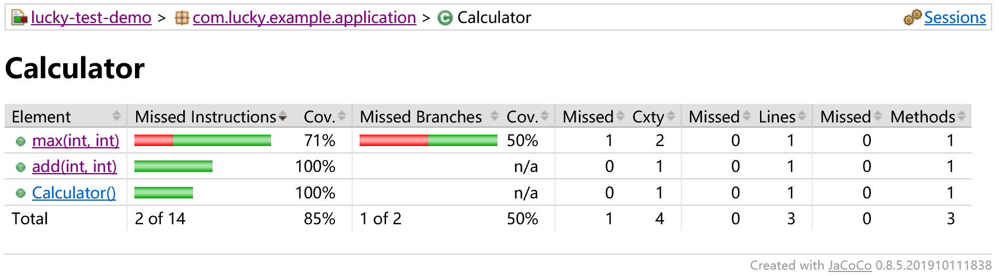
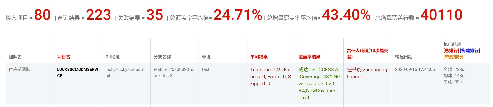

前言
公司测试报告数据的收集主要依赖于Jacoco，同时开发者也可以通过Jacoco的报告查看自己单测的覆盖情况。
Jacoco 包含了多种尺度的覆盖率计数器,包含指令级（Instructions,C0 coverage），分支（Branches,C1 coverage）、圈复杂度（Cyclomatic Complexity）、行（Lines）、方法（Non-abstract Methods）、类（Classes）。
1. 添加Jacoco Maven Plugin
1
2
3
4
5
6
7
8
9
10
11
12
13
14
15
16
17
18
19
20
21
22
23
24
25
26
| <plugin>
<groupId>org.jacoco</groupId>
<artifactId>jacoco-maven-plugin</artifactId>
<version>0.8.3</version>
<configuration>
<!--指定生成.exec文件的存放位置-->
<destFile>target/coverage-reports/jacoco-unit.exec</destFile>
<!--Jacoco是根据.exec文件生成最终的报告，所以需指定.exec的存放路径-->
<dataFile>target/coverage-reports/jacoco-unit.exec</dataFile>
</configuration>
<executions>
<execution>
<id>jacoco-initialize</id>
<goals>
<goal>prepare-agent</goal>
</goals>
</execution>
<execution>
<id>jacoco-site</id>
<phase>test</phase>
<goals>
<goal>report</goal>
</goals>
</execution>
</executions>
</plugin>
|
2. 配置maven-surefire-plugin
因为Jacoco的工作原理和JMockit一样，所以一起使用会冲突，如果需要一起使用要同时配置2个javaagent。
1
2
3
4
5
6
7
8
9
10
| <plugin>
<artifactId>maven-surefire-plugin</artifactId>
<version>3.0.0-M5</version>
<configuration>
<argLine>
-javaagent:${settings.localRepository}/org/jmockit/jmockit/${jmockit.version}/jmockit-${jmockit.version}.jar
-javaagent:${settings.localRepository}/org/jacoco/org.jacoco.agent/${jacoco.version}/org.jacoco.agent-${jacoco.version}-runtime.jar=destfile=target/coverage-reports/jacoco-unit.exec
</argLine>
</configuration>
</plugin>
|
3. 查看报告
执行mvn test等会执行单测的Maven命令后，打开项目目录下的/target/site/jacoco/index.html文件，便可查看Jacoco报告。如果有在 USOP 上打包还可以通过 EESERVICE 查看本次单测的增量覆盖率等信息。
在Jacoco报告的包视图、类试图以及方法试图，均可查看对应的代码覆盖率（Missed Instructions Cov.）、分支覆盖率（Missed Branches Cov.）、分支覆盖个数及分支总数（Missed Cxty）、覆盖代码行数（Missed Lines）和覆盖方法个数（Missed Methods）。

在Jacoco报告的代码视图，可以查看代码的已覆盖行（绿色）、未覆盖行（红行）和有分支未覆盖行（黄色）。

在 EESERVICE 上可以查看全量覆盖率、增量覆盖率、增量覆盖行数和执行耗时等信息。
